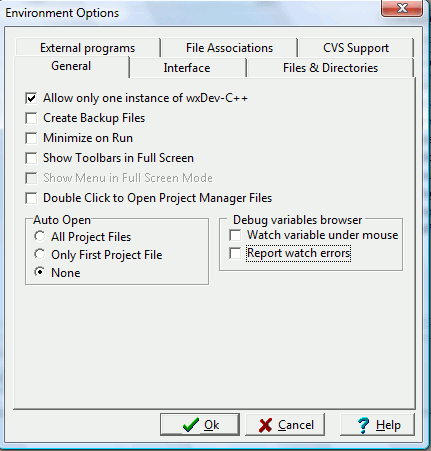

To access the Environment Options dialog, click on the Tools menu and select Environment Options.

Allows only one instance of the IDE to be running.
If enabled, whenever you save a source file inwx Dev-C++, a backup copy will be saved along with it. This backup will be overwritten on successive saves.
If enabled, wxDev-C++ will minimize itself when you execute your program from within it (using the `Run' command under `Execute').
By default, toolbars are hidden when wxDev-C++ is made full-screen. If this option is enabled, they will be shown all the time.
If this option is enabled, you'll need to double-click on the nodes in project-manager to open them in the editor. Otherwise, you would single-click.
Here, you can choose what files are automatically opened in the editor when you open a project.